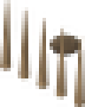
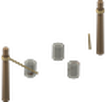
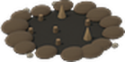
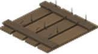

Every trap wears out. Right-click it to see how worn it is, repair it or take it down for part of its materials.
Sandbox: traps hurting players (off by default), tyre punctures, damage, durability and how far an alarm line is heard.